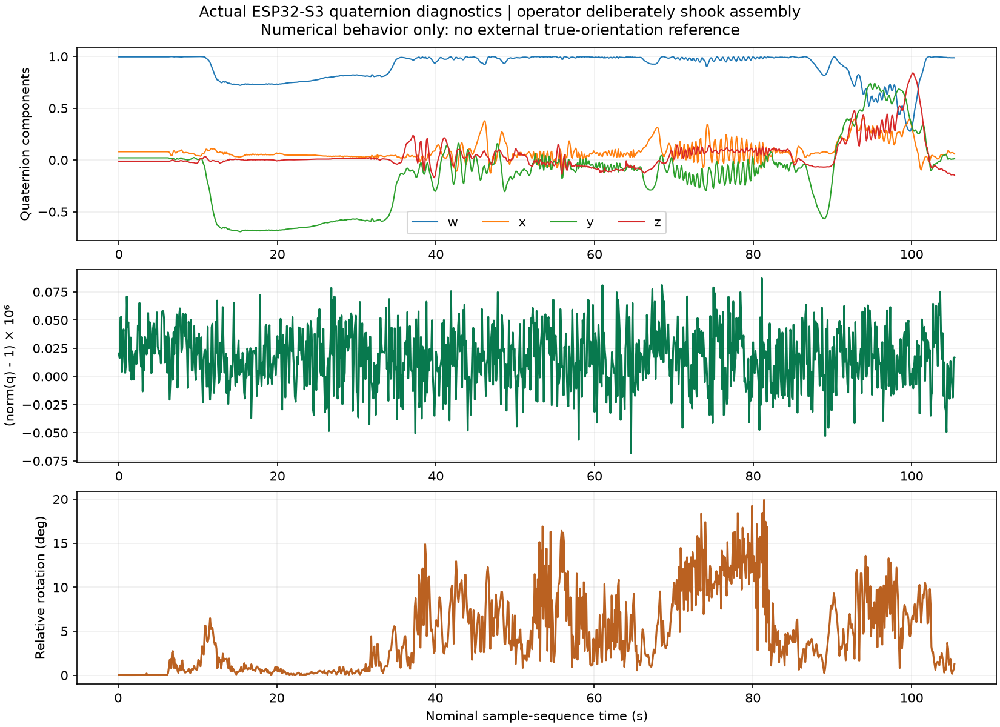

IntelQCopter · Important engineering step · 31 October 2026
A continuous attitude state
From gyro rates and gravity to a normalized quaternion.
1 · What improved
The operator reports a good preview response and confirms that visible jitter occurred during deliberate shaking. The recording contains 1055 quaternion snapshots, norm between 0.999999932 and 1.000000087, and no logged acquisition errors. These support numerical-state health during this run, not exact physical attitude accuracy.

2 · Estimator architecture
MPU6050 → fixed calibrationGyro → body rates → quaternion predictionAcceleration → gravity correctionNormalize q → attitude state
Mahony complementary fusion from Adafruit AHRS2.4.0 is used for this preview. This is not a Kalman filter and is not a flight PID. The application remains one Arduino main.cpp. No motor output or flight acceptance.
3 · Meaning of the quaternion
q = (w, x, y, z) = (cos(α/2), u sin(α/2))
u = (uₓ, uᵧ, u_z), ‖u‖ = 1
‖q‖² = cos²(α/2) + ‖u‖² sin²(α/2) = 1
q encodes orientation; w is its scalar part and (x,y,z) its vector part. α is a rotation angle, u its unit axis, and ‖·‖ the Euclidean norm (square root of the sum of squared components). Four numbers with one unit-length constraint represent three local rotational degrees of freedom. q and −q represent the same orientation.
4 · Prediction and correction
â = a / ‖a‖, e = â × ĝ(q)
ω_c = ω + Kₚ e
q̇ = ½ q ⊗ (0, ω_c)
q* = q + Δt q̇, q_next = q* / ‖q*‖
a is calibrated body acceleration (m/s²), â its unit direction, ĝ the estimated unit gravity direction in body coordinates. × denotes vector cross product; e is their direction error. ω is bias-corrected body gyro rate in rad/s; ω_c adds proportional gravity feedback. Kₚ=0.5 is the provisional estimator correction gain, not a motor-controller gain. Integral correction is disabled (Kᵢ=0) because the measured gyro bias remains the baseline. ⊗ denotes quaternion multiplication; q̇ is the time derivative; Δt=0.001s is the nominal FIFO measurement interval, not the interval between serial reads. * labels an intermediate value, not a multiplication here. The shown equations explain the pinned library's IMU update and the application's explicit renormalization.
ĝ(q) = (2(xz−wy), 2(wx+yz), 1−2(x²+y²))
This body gravity convention matches the preview's positive-Z resting reference. Accelerometer feedback is skipped when |‖a‖−g|≥1.5m/s², with g=9.80665m/s². The threshold is heuristic: some translations keep ‖a‖ close to g and pass this check. Startup requires usable gravity. Heading is initialized to zero and remains a relative reference; no absolute yaw correction is available from accelerometer alone.
5 · Why four smooth numbers can still display a jump
Δα = 2 acos(|q₁ · q₂|)
φ = atan2(2(wx+yz), 1−2(x²+y²))
θ = asin(clamp(2(wy−zx), −1, 1))
For unit quaternions q₁,q₂, their dot product · is the sum of pairwise component products; absolute value handles the equivalent signs q and−q. acos converts the relative rotation to an angle. This avoids confusing an Euler wrap with physical rotation. φ is roll and θ pitch; these displayed coordinates remain ambiguous near vertical pitch and roll wraps at±180degrees. clamp bounds asin's input against rounding errors; it does not eliminate the coordinate singularity. Future feedback must use a well-defined orientation error or an explicitly bounded operating region.
6 · What this run does and does not validate
The state remained normalized during the operator's movement. Relative rotation is computed from each pair of normalized diagnostic quaternions; the plot is not a ground-truth motion trace. Maximum diagnostic step was 19.91 degrees; deliberate shaking can produce substantial movement, but no external reference establishes the true angle or exact causes of every change. Source and raw-log hashes are in evidence.json. Existing calibration was not refitted.
7 · Next: commands before motors
Xbox stickDeadband + gentle shapingBounded roll/pitch and yaw-rate targetsGraphs only → later PID/mixer
The next firmware revision adds visible setpoints. It is not part of the measured run above and requires its own combined-input validation. Motors stay disabled; altitude control still requires an appropriate sensor. This is a finite software milestone, not another calibration campaign.
Study appendix · read the actual code
Source shown below is the exact new application code, not pseudocode. Expand one function at a time. Reading order: inputs → validation → state update → outputs. Formatting is C-like with Allman braces. Library internals remain in the pinned Adafruit source.
Quaternion estimator update
static bool update_attitude(const float acceleration[3], const float rate[3])
{
float magnitude = sqrtf(acceleration[0] * acceleration[0]
+ acceleration[1] * acceleration[1] + acceleration[2] * acceleration[2]);
bool gravity_usable = isfinite(magnitude) && fabsf(magnitude - 9.80665f) < 1.5f;
for (uint8_t axis = 0; axis < 3; axis++)
{
if (!isfinite(rate[axis]) || !isfinite(acceleration[axis]))
{
return false;
}
}
if (!attitude_started)
{
if (!gravity_usable)
{
return false;
}
float roll = atan2f(acceleration[1], acceleration[2]);
float pitch = atan2f(-acceleration[0], hypotf(acceleration[1], acceleration[2]));
attitude.begin(1000.0f);
attitude.setKp(0.5f);
attitude.setKi(0.0f);
attitude.setQuaternion(cosf(roll / 2) * cosf(pitch / 2),
sinf(roll / 2) * cosf(pitch / 2), cosf(roll / 2) * sinf(pitch / 2),
-sinf(roll / 2) * sinf(pitch / 2));
attitude_started = true;
}
// FIFO sample period, not host receive timing. Library expects gyro deg/s.
attitude.updateIMU(rate[0] * radians_to_degrees,
rate[1] * radians_to_degrees, rate[2] * radians_to_degrees,
gravity_usable ? acceleration[0] : 0.0f,
gravity_usable ? acceleration[1] : 0.0f,
gravity_usable ? acceleration[2] : 0.0f, 0.001f);
attitude.getQuaternion(&attitude_q[0], &attitude_q[1], &attitude_q[2], &attitude_q[3]);
float norm = sqrtf(attitude_q[0] * attitude_q[0] + attitude_q[1] * attitude_q[1]
+ attitude_q[2] * attitude_q[2] + attitude_q[3] * attitude_q[3]);
if (!isfinite(norm) || norm < 0.5f || norm > 1.5f)
{
return false;
}
for (uint8_t component = 0; component < 4; component++)
{
attitude_q[component] /= norm;
}
attitude.setQuaternion(attitude_q[0], attitude_q[1], attitude_q[2], attitude_q[3]);
return true;
}
Xbox mapping and readiness
static float stick_command(uint16_t raw)
{
const float deadband = 0.08f;
float value = ((float)raw - 32767.5f) / 32767.5f;
float magnitude = fabsf(value);
if (magnitude <= deadband)
{
return 0.0f;
}
float shaped = (magnitude - deadband) / (1.0f - deadband);
shaped = 0.6f * shaped + 0.4f * shaped * shaped * shaped;
return value < 0.0f ? -shaped : shaped;
}
static void report_targets(void)
{
static bool neutral_seen = false;
static uint32_t previous_report = 0;
uint32_t now = millis();
bool recent = xbox.isConnected() && !xbox.isWaitingForFirstNotification()
&& (uint32_t)(now - xbox.getReceiveNotificationAt()) <= 300;
float roll = 0.0f;
float pitch = 0.0f;
float yaw = 0.0f;
float vertical = 0.0f;
if (recent)
{
roll = stick_command(xbox.xboxNotif.joyRHori);
pitch = stick_command(xbox.xboxNotif.joyRVert);
yaw = -stick_command(xbox.xboxNotif.joyLHori);
vertical = -stick_command(xbox.xboxNotif.joyLVert);
if (roll == 0.0f && pitch == 0.0f && yaw == 0.0f && vertical == 0.0f)
{
neutral_seen = true;
}
}
else
{
neutral_seen = false;
}
bool valid = recent && neutral_seen;
if ((uint32_t)(now - previous_report) >= 100)
{
TargetPacket target = {now, valid, valid ? 20.0f * roll : 0.0f,
valid ? 20.0f * pitch : 0.0f, valid ? 30.0f * yaw : 0.0f,
valid ? vertical : 0.0f};
xQueueOverwrite(target_queue, &target);
previous_report = now;
}
}
static void xbox_worker(void *)
{
xbox.begin();
NimBLEDevice::getScan()->setActiveScan(true);
for (;;)
{
xbox.onLoop();
report_targets();
vTaskDelay(pdMS_TO_TICKS(5));
}
}
| Character / word | Meaning in this code |
|---|
static | At file scope a function/name is local to this translation unit; inside report_targets, static variables retain their values across calls. |
const | This named value cannot be assigned another value through that declaration. |
float | A single-precision floating-point number; f suffix selects a float literal rather than double. |
bool / true / false | Boolean type and values, used for readiness, checks and decisions. |
uint8_t / uint16_t / uint32_t | Unsigned integers with8,16,32bits. raw sticks use16bits. Timing uses unsigned32bit subtraction, which tolerates a clock wrap for these short intervals. |
void | No returned value, or an explicitly empty argument list in a C-style function declaration. |
() | Group an expression, list function parameters, or call a function depending on position. |
{} | Enclose a function or control block; in an initializer, collect initial values. |
[] | Declare/index an array. [3] in a function parameter documents a three-component input; C++ passes a pointer and does not enforce its length. |
; | Ends a declaration or statement. In a for header it separates initialization, condition and update. |
, | Separates arguments, declarations or initializer elements. Each function argument has its own role. |
= / == | Assignment versus equality comparison. Exact zero is intentional here because the deadband function returns an explicit zero. |
! / && / || | Logical NOT, AND, OR. AND/OR short-circuit: the right side is evaluated only when needed. |
< / > / <= / >= | Ordering comparisons; thresholds determine admission, not physical truth. |
+ / - / * / / | Arithmetic. Unary - reverses a sign. In C++ * is multiplication here, unlike Python exponent **. Squaring is x*x. |
? : | Conditional expression: condition ? value_when_true : value_when_false. This differs from the colon ending a Python if. |
+= / /= / ++ | Add-and-store, divide-and-store, increment. component++ advances one array index after the loop body. |
(float) / (uint32_t) | Explicit type conversions. Float cast prevents integer-only arithmetic; unsigned timestamp subtraction supports rollover behavior. |
. / :: | Object member access (xbox.isConnected) and C++ namespace/class qualification (the library Core type). |
return | Finish this function, optionally returning a value. Returning false lets the caller stop invalid acquisition. |
if / else / for | Conditional execution, alternative branch, bounded loop. Read the condition before the enclosed statements. |
isfinite / fabsf / sqrtf | Check finite number; absolute float value; float square root. hypotf(a,b)=sqrt(a*a+b*b) evaluated with improved numerical handling. |
sinf / cosf / atan2f / asinf | Trigonometric functions using radians. atan2f(y,x) includes quadrant; asinf input must be in[-1,1]. |
Serial.printf | Formatted diagnostic output. %u unsigned integer, %.3f float with3decimal digits, \n newline. It does not command a motor. |
0.08f / 32767.5f | 8% normalized deadband and midpoint/half-span of0..65535. Normalization is s=(raw−32767.5)/32767.5. |
0.6f / 0.4f | Weights of s and s³ after deadband rescaling: they sum to1, preserve endpoints and soften small deflections. |
20.0f / 30.0f | Provisional display target limits:20degrees roll/pitch,30deg/s yaw. Not thrust percentages or validated flight limits. |
100 / 300 | 100ms target report interval and300ms maximum report age. These are bench policy choices, not a demonstrated flight-link guarantee. |
Follow one update
- Compute acceleration magnitude by squaring its3components, summing and taking the square root. Admit gravity correction only inside the documented magnitude tolerance.
- Reject nonfinite acceleration/rate. At first usable sample, derive gravity tilt, then form q from half-angle sine/cosine products with initial yaw0.
- Pass body gyro in deg/s (the library converts to rad/s), admitted acceleration or zero, and0.001s to updateIMU. A zero vector disables acceleration feedback in the library; gyro prediction continues.
- Read all4quaternion components. Compute their norm, reject invalid/implausible values, divide every component by the norm and store the normalized state back.
- Derive Euler diagnostic values from q; clamp pitch's sine input. The control state remains q; the preview still has no PID/actuator path.
Follow one Xbox command
s=(raw−32767.5)/32767.5
d=0.08; |s|≤d ⇒ u=0
otherwise t=(|s|−d)/(1−d), u=sign(s)(0.6t+0.4t³)
raw is a16bit stick reading, s normalized signed travel, d deadband, t rescaled travel magnitude, u the gentler output. report_targets keeps targets at zero until a recent report and centered sticks have been observed. It then scales u to angle/rate limits. A stale report clears readiness and returns targets to zero. This is display-only behavior; idle notification cadence and physical signs must be validated before flight. The left vertical request remains dimensionless: no altitude estimator exists here.
How the two cores share the next target
Core0 Xbox task → timestamped TargetPacketOne-slot FreeRTOS queueCore0 telemetry task → T recordCore1 → IMU + quaternion only
TargetPacket is a struct (a named group of fields). &target takes the packet's address for xQueueOverwrite; the queue copies the value, rather than retaining a pointer to the worker's stack. Its capacity is1 so only the newest target matters. xQueueReceive copies the latest packet into the serial task without waiting. Queue synchronization is preferable to unsafely sharing several independent float variables between tasks. timestamp is a32bit millisecond value; the receiving task independently rejects a packet older than300ms even if the Xbox worker is stuck trying to connect. The two tasks share core0; pinning does not eliminate interrupt or memory contention. No target is sent to an actuator. pdMS_TO_TICKS converts milliseconds into scheduler ticks; vTaskDelay yields the Xbox worker for5ms. The IMU acquisition loop does not call the Xbox library.